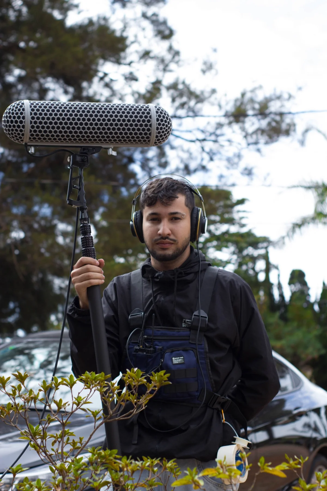

Estúdio de audiovisual e criatividade. Design, motion, ilustração e som — da ideia à mixagem final.
Trabalhos selecionados
Carregando trabalhos…
O que eu faço
Edição de vídeo
Ritmo e narrativa em Premiere Pro e DaVinci Resolve, para clipes, documentários e publicidade.
Motion & Animação
Motion graphics e animação 2D em After Effects, para marcas, música e cinema.
Sound Design
Edição, mixagem 2.0 e 5.1, desenho de som e restauração em Pro Tools e iZotope RX.
Design
Identidade visual, peças digitais e impressas, design editorial.
Ilustração
Personagens, capas de single, concept art e quadrinhos.

Sou André Ferreira Carneiro, editor de vídeo e motion designer. Edito com foco em ritmo e narrativa, somando cortes, motion graphics e um domínio avançado de áudio.
Hoje sou motion designer na BP Seguradora e curso Cinema de Animação e Artes Digitais na UFMG. Antes, passei mais de 2 anos na Scriptus Comunicação editando, mixando e masterizando áudio para cinema, dublagem e acessibilidade, em fluxos com volume alto e prazos fixos. O Ocarneiro Studio é onde junto tudo isso com design e ilustração.
Premiere Pro · DaVinci Resolve · After Effects · Photoshop · Pro Tools · iZotope RX 11 · Reaper · Blender
Trajetória
Motion Designer
BP Seguradora · Belo Horizonte
Animações e conteúdos audiovisuais para a comunicação institucional e comercial da BP Seguros.
Técnico Audiovisual IV
Scriptus Comunicação · Belo Horizonte
De estagiário de operação de áudio a Técnico Audiovisual IV. Edição, mixagem e masterização em Pro Tools e iZotope RX 11; trilhas e desenho de som para cinema e acessibilidade; controle de qualidade, procedimentos padrão para dublagem e captação, versionamento de centenas de projetos e treinamento de equipes.
Designer Gráfico (bolsista PROEX)
Escola de Veterinária, UFMG
Identidades visuais, peças publicitárias, banners e artes para campanhas digitais e impressas.
- Cinema de Animação e Artes DigitaisUFMG · conclusão prevista Dez/2026
- Produção Digital e GamesStart 5.0, Escola Saga · 2021
- Técnico em InformáticaIFNMG, Januária · 2018
- “O que está em cima é como o que está embaixo” ↗Projeção “Impermanências do visível”, 13º Festival de Fotografia de Tiradentes · N'Foto EBA/UFMG · 2024
- Criação e avaliação de uma Web TV com conteúdo maker ↗Artigo, X Simpósio de Informática do IFNMG · iniciação científica CNPq · 2018
Cursos e certificados
- Agent Lab #2 — agentes de IA (16h)Human Academy · 2026
- Mixagem 5.1 para dublagem (6h)Caserta Música e Design de Som · 2025
- Design de personagens para games e animação (8h)Senac Minas · 2025
- Curso livre de Sonorização (60h)Instituto Federal de Goiás · 2025
- Produção musical no ReaperEscult / UFRB · 2025
- Som direto para cinema e edição de áudio (20h)Escola SENAI do Audiovisual · 2023
- Animação 2DEscola Saga · 2020